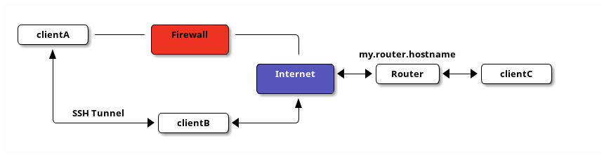

Syncthing with SSH Port Forwarding
Table of Contents
Introduction
Recently, I have explained how to configure BitTorrent Sync over an SSH SOCKS proxy. However, due to various problems with BTSync, I tried Syncthing and I am very satisfied with it.
Advantages that I have experienced so far:
- open source;
- publicly available synchronization protocol;
- very reliable if the configuration is fine;
- it's a young project with motivated developers;
- it is fast (if enough CPU is available).
Disadvantages that I have experienced so far:
- needs more CPU (this is an issue if you are using devices with very old or slow hardware, e.g., a Raspberry Pi);
- the configuration is more tedious.
The general setup is very well explained on the project homepages:
However, I have the problem, that my computer at work (clientA) is
behind a firewall and not exposed to the public. In order to
circumvent the firewall, we need a clientB that has full internet
access, runs an SSH server and is accessible by clientA; then we can
set up SSH such that it forwards connection requests from clientA to
the outside and the other way around; check it out.

The Idea
We will use SSH port forwarding to map a port on clientA (let it be
port 22111) to a port on the NAT router at my.router.hostname (here
I will use port 22222). The router has to redirect the port to the
clientC that listens for incoming connections at this specific port
with Syncthing (port 20000 here).
In more detail, after the configuration below, the port
localhost:22111 on clientA will point to a random port on
clientB. There, the SSH server redirects the traffic to another
random outgoing port and forwards it to my.router.hostname:22222.
You still need to setup your router so that it forwards incoming
connections to clientC:20000 (many router port forwarding tutorials
are available online).
This way, we can circumvent the firewall that prevents direct access
to my.router.hostname:22222.
The Setup
In order for this to work, you need SSH access from clientA to
clientB (let's assume that your user name is user). clientB
needs to run an SSH server and have full access to the internet.
The forwarding from clientA to the router at my.router.hostname
is done by the following SSH command:
ssh -N -vvv -L 22111:my.router.hostname:22222 user@clientB
-N- Do not open an interactive session (no commands can be entered at prompt).
-vvv- Increase verbosity to a high level, so that you can debug problems if you have any (can be removed later).
-L- This tells SSH to use the SSH server at
clientBto map the local (-L) port 22111 on the client that runs the SSH command (in this caseclientA) to port 22222 onmy.router.hostname. Hence, iflocalhost:22111is accessed atclientA, it gets forwarded to the NAT router which in turn has to be set up to forward incoming requests at port number 22222 to , e.g.,clientC:22000.
It is important to notice that the forwarding specification (for both,
local and remote forwards) consists of 3 parts p1:host:p2. p1 is
the port on the client that executes the SSH command; host is the
host seen from the SSH server (e.g., clientB) and not from the
client executing the command; p2 is the port on host seen from the
SSH server. I.e., ssh -L 123:localhost:456 ssh_server forwards port
123 on the client executing the SSH command to port 456 on
ssh_server.
Test the Setup
The setup can be tested very easily and efficiently with the following method (this method can also be used with other software or ports).
- Close all running Syncthing processes on both sides.
- Tell
clientCto listen on port 22000 by runningnc -l -p 22000onclientC. - Access port 22111 on
clientAby runningnc -v localhost 22111onclientA. - Type some stuff into the terminal at
clientAand hope that it is printed atclientC.
If everything works, you can remove the -vvv flag, add a -q flag
which tells SSH to be quiet and run the SSH port forwarding at boot.
ssh -N -q -L 22111:my.router.hostname:22222 user@clientB
A good blog article about port forwarding.
Furthermore, the port forwarding has to be started before Syncthing
starts, otherwise there be dragons. I have written a small script
that waits some time to start the port forwarding as well as a script
that does the same for syncthing.service and
syncthing-inotify.service.
Remote Port Forwarding
Furthermore, if you want to reach clientA from home, remote port
forwarding can also be done. However, I did not need this and did not
follow it up, e.g.:
ssh -N -q -R 22000:localhost:22200 clientB
This would tell clientB to forward incoming requests at port 22200
to the client that executes the SSH command; in this case,
clientA. Take care, GatewayPorts has to be set to yes.
Amazing Stuff
Something to think about: Assume a working SSH server on clientC
that is accessible by clientA (maybe only via clientB). Suppose,
that the IP address of the router is 192.168.1.1 (seen from
clientC; local area network). What does the following command
(executed on clientA) achieve?
ssh -L 12345:192.168.1.1:80 clientC
Try to access localhost:12345 in your browser at clientA and watch
the pure awesomeness!